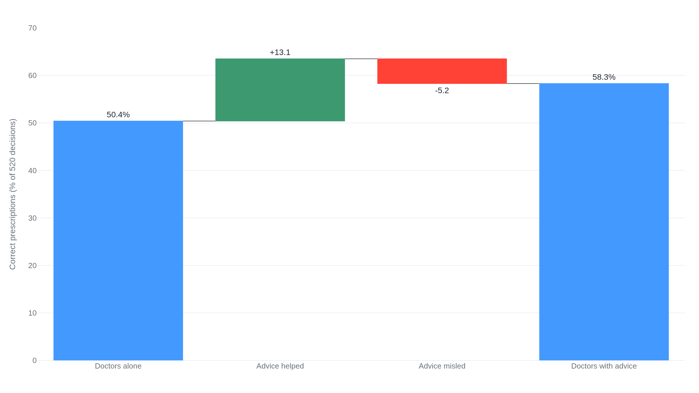

Trained operators keep deferring to automation that is wrong
Over-trusting a machine and refusing a good one are the same miscalibration, now measured in cockpits, clinics, and the first studies of people leaning on chatbots.
Why this matters
You keep hearing that people trust AI too much: leaning on a chatbot's answer, shipping the code an assistant wrote, believing a confident summary that turns out to be wrong. The worry has a name and a research record worked out four decades before chatbots existed, for cockpits and control rooms. It is called automation bias. This lesson shows you what that record actually measured, so you can tell the part that is established from the part that is still a forecast. By the end you will know why keeping a human in the loop is a real safeguard and an incomplete one, and why the same habit of mind that makes a person over-trust a machine also makes them reject one that works.
- 01
- Houston pushed out teachers over a score they could not check: a real school district acting on an automated rating its own staff could not recompute.
The job automation leaves behind
In 1983 Lisanne Bainbridge, a psychologist writing about industrial
process control, set out what happens to a person after a machine takes
over their task. Automate the routine work and the operator is left with
the two jobs that could not be automated: watching for the rare moment
the machine fails, and taking over when it does. The automation
undermines both.1 A skill
held in reserve decays, so a
formerly experienced operator who has been monitoring an automated
process may now be an inexperienced one.
1
And a person watching a display for a fault that almost never comes
stops seeing it. The vigilance research Bainbridge draws on put the
drop-off at about half an hour.1
The automation was installed because it makes fewer errors than the person. Asking that person to judge whether the machine is right is asking them to out-think the thing brought in to out-think them. Bainbridge called it an impossible task.1 Automation bias is what fills the gap she describes: the tendency to take the machine's output as correct and to stop looking for evidence that it is not.
From the flight simulator to the Patriot battery
Bainbridge argued from the logic of the situation. The measurements came later, and they line up with her. Researchers at NASA's Langley center built the cleanest test.2 Forty people ran a flight-simulation task while an automated monitor watched one of their gauges for faults. When the monitor's reliability varied from session to session, the operators caught most of the failures it missed: their sensitivity, scored on an index where 0.5 is chance and 1.0 is perfect, sat at 0.84. When the monitor was instead made steadily reliable, the same score fell to 0.70.2 Nothing about the people changed and nothing about the failures changed. Only the automation's consistency changed, and the steadier it ran, the less the humans checked it. The researchers named the effect complacency, a plain word for trust that outruns checking.2
The engineer Mary Cummings, reviewing decision aids for time-critical work, gave the two ways this fails their names.3 An error of omission is failing to catch a problem the automation did not flag. An error of commission is doing what the automation says when it is wrong.3 In one simulated-monitoring study she summarizes, the omission-error rate was 41% for operators with an automated aid and 3% for those without one: the very tool meant to catch problems made the humans miss more of them. Deliberate wrong prompts pushed the commission-error rate to 65%, even when a fully reliable backup check was there to contradict the machine.3
The commission error has a body count. During the 2003 invasion of Iraq, US Patriot missile batteries shot down a British Tornado and a US F/A-18 in friendly fire. Cummings, drawing on the Army's own review, reports that under the stress of combat the Patriot operators did not veto the computer's solution in the seconds they had.3 The system was doing exactly what Bainbridge had described. It had made the decision, and the human's job had shrunk to approving it.
The aid that helps while it misleads
The record so far makes automation bias look like pure loss. It is not, and a study of doctors shows why. Kate Goddard put a prescribing decision-support system in front of 26 general practitioners and had each prescribe across 20 clinical scenarios, 520 decisions in all.4 The system's advice was right 70% of the time and wrong the other 30%, about as good as a real one. Left alone, the doctors prescribed correctly in 50.4% of cases. With the advice, they were right in 58.3%: an eight-point gain from a tool that was itself wrong nearly a third of the time.4
The bias sat inside that gain. The advice pulled 13.1% of decisions from wrong to right, and it pushed 5.2% from right to wrong: a doctor who held the correct prescription, saw the system disagree, and changed it.4 That 5.2% is automation bias measured directly. The eight-point net improvement and the flipped-correct decisions are the same tool seen from two sides.

So the aid's value and its power to mislead do not trade off against each other. They arrive together, and which one dominates depends on how often the aid is right. Goddard also found that the doctors with the least clinical experience changed their answers the most.4
The opposite mistake
If automation bias were the whole story, the remedy would be obvious: distrust the machine more. The trouble is that people already distrust it, in a way that is just as measured and just as costly. Berkeley Dietvorst and colleagues ran five experiments in which people could bet on a statistical model's forecast or on a human's.5 Those who had watched the model work were less willing to use it than those who had not, even when they had seen it beat the human forecaster. One visible mistake cost the model their confidence faster than the same mistake cost a person. The researchers called this algorithm aversion. It is automation bias reversed, the same miscalibration of trust pointed the other way.5
So the same person can lean on a machine that is wrong and abandon one that is right. What decides which way they miss is not a fixed trait. It is the setup around them. Cummings found that when an aid can be wrong, a display that simply shows the situation beats one that tells the operator what to do, and she recommends the plain status display unless the automation is perfect.3 Goddard found that holding doctors accountable for their choice made them cross-check the advice more often.4 These are not the single fix of keeping a human in the loop. They are settings on how the human and the machine are joined, and they move the error rate up or down.
What the chatbot studies can and cannot show
The same argument is now made about chatbots and coding assistants, where the evidence is younger and thinner than the cockpit's. Two recent experiments measure the over-reliance directly. Jessica Bo and colleagues had 400 people answer LSAT logic questions alone and then with advice from a chatbot that was correct about half the time.6 Alone, people scored 36%; with the advice, 46%. But a perfectly calibrated human-and-model team could have reached 62%, and most of the missed gain went to following the model when it was wrong. In the plainest condition, when the advice was bad, people took it more often than not.6 The same study found people grew more confident after the reliance decisions they got wrong, the checking meant to catch the machine's errors going slack right where it was needed.6 In a second experiment, Daniel Perry and colleagues found that programmers given an AI coding assistant wrote less secure code than those without one, and were likelier to believe their code was secure.7
These results are real, and they are also narrow. They are single sittings by crowdworkers and students, on specific model versions from 2022 to 2024, working set tasks. They are not records of what people do with these tools across months of real work.
The strongest present-day version of the argument reaches further than that. A 2025 paper led by Lujain Ibrahim argues that measuring and reducing over-reliance on language models should become central to how they are built. It warns above all of cognitive deskilling: a population that loses the skills it hands to the machine, Bainbridge's decayed operator at the scale of everyone.8 But the same paper grants that the direct evidence is not there yet, noting that limited evidence of over-reliance is not evidence that there is no problem.8 The deference is measured and real in the systems built to test it. The claim that it is remaking the population is, for now, a projection.
The takeaway
Automation bias is one of the better-established failures in this series. The mechanism was worked out for control rooms in 1983, and it has been measured since in flight simulators, in a Patriot battery's friendly fire, and in doctors talked out of correct prescriptions. When you hear that people trust AI too much, that much is real and counted. The two cautions are just as earned. The first is that the same tools help when they are right. Goddard's doctors ended more accurate with the flawed aid than without it, so the presence of automation bias is not a verdict against the aid. The second is that trust misfires in both directions: someone who over-trusts a machine will also, after watching it slip once, abandon one that beats them. That is why keeping a human in the loop helps only as far as the loop is built well and the human is held to account for checking it. And the biggest claim now being made, that leaning on chatbots is deskilling whole populations, runs ahead of what anyone has measured, which the researchers who raise it concede.
- 01
- Atul Gawande, "The Checklist": how medicine met the same human-and-machine problem with a checklist rather than more monitoring.
- 02
- William Langewiesche, "Columbia's Last Flight": how earned confidence in a complex system quietly wears down the vigilance meant to catch its failures.
Sources
- Automatica · Lisanne Bainbridge, "Ironies of Automation" (1983)
- NASA · Prinzel et al., "Examination of Automation-Induced Complacency and Individual Difference Variates," TM-2001-211413
- AIAA · M. L. Cummings, "Automation Bias in Intelligent Time Critical Decision Support Systems" (2004)
- City University London · Kate Goddard, "Automation Bias and Prescribing Decision Support" (2012)
- Journal of Experimental Psychology: General · Dietvorst, Simmons & Massey, "Algorithm Aversion" (2015)
- arXiv · Bo, Wan & Anderson, "To Rely or Not to Rely?" (CHI 2025)
- arXiv · Perry, Srivastava, Kumar & Boneh, "Do Users Write More Insecure Code with AI Assistants?" (CCS 2023)
- arXiv · Ibrahim et al., "Measuring and Mitigating Overreliance to Build Human-Compatible AI" (2025)